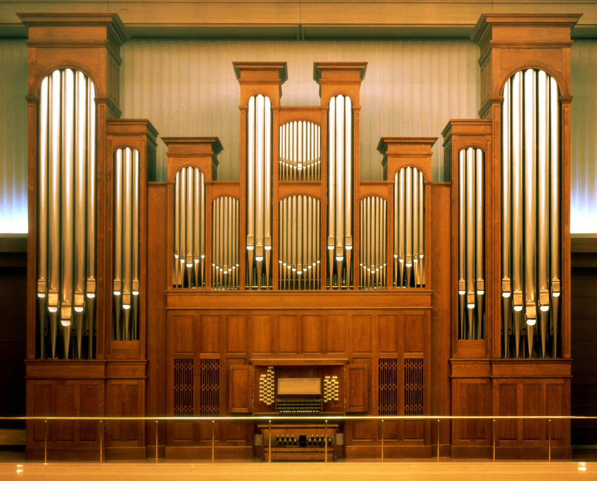

Organ

The organ is a keyboard instrument known for its grand, powerful and majestic sound. With its wide range of tones and volume, it is a central part of churches, concert halls, jazz and rock music, filling any space with depth and emotion.
Types of Organs
Pipe Organ
The traditional organ, which produces sound by passing air through metal or wooden pipes. It is usually custom built for churches and concert halls and has a rich, powerful tone.
- Price range: from $50,000 to $1,000,000+
Digital Church Organ
An electronic organ that uses recorded pipe sounds and multiple keyboards. It offers a similar sound to a pipe organ at a lower cost and with much less maintenance.
- Price range: from $5,000 to $100,000+
Drawbar Organ
A compact organ with sliding drawbars that let players shape the tone. It has a warm, soulful sound and is popular in jazz, blues, gospel and rock.
- Price range: from $1,500 to $12,000+
Reed Organ
A smaller organ that makes sound with free reeds and air from foot-operated pedals or a bellows. It has a soft, gentle tone and suits home use and traditional music.
- Price range: from $500 to $5,000
Popular Brands
- Hammond
- Allen
- Rodgers
- Yamaha
- Roland